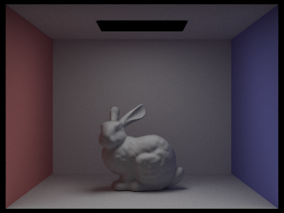
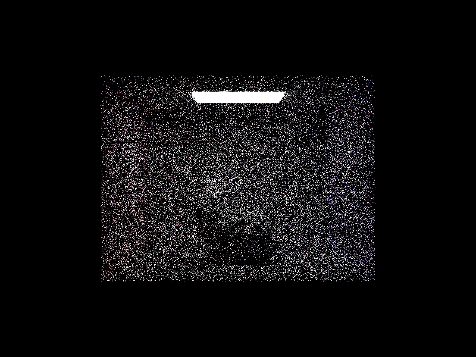
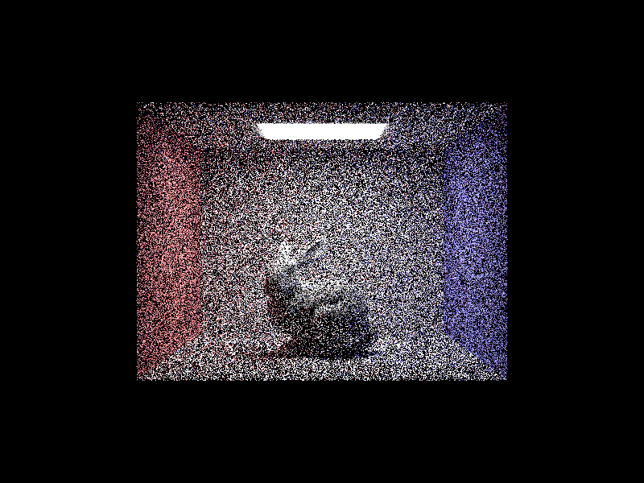

CS184/284A Spring 2025 Homework 3
Ray tracing, Illumination
Overview
In Homework 3, we implemented logics generating rays to creating path tracers of the rays. For part 1, we designed how a ray in world space could be mapped to camera space and eventually end up with image coordinates. Here, with the Ray generated, we were able to implement functions to check if the ray intersects with triangles and spheres. For part 2, we introduce a new rendering optimization called "Bounding Volume Hierarchy" where we keep spatial coherence between multiple primitives and efficiently render the entire image by setting a tree-like data structure. For part 3, now we see how light actually travels, intersects, and bounces off from a material. We compute the radiance and illumination based off the optical properties learned from CS 184 lectures including reflection, uniform hemisphere sampling, and importance sampling. Then, in part 4, we develop the bounces of rays by adding global illumination logic with N amount of bounces, and whether it accumulates every ray bounces or not depending on User's input. We also introduce global illumination with Russian Roulette which is a random termination logic to prevent issues occurred with very large N bounces input. Lastly, part 5, we add adaptive sampling where we sample each pixel of the image with different amount of samples based on the convergence of the ray's illuminance, which optimizes the complexity of the rendering computation.Part 1: Ray Generation and Scene Intersection
Ray Generation
In the Camera::generate_ray(...) function, it takes a normalized image coordinate \((x, y)\) as an input and produces a Ray in world space transformed from camera space.
We first convert the Camera::hFov and Camera::vFov angles from degrees to radians which will be used in transformation.
Then, we transfrom the \((x, y)\) coordinates from image space to camera space by applying linear transformation of \( xcamera=(2(x-0.5))*tan( \frac{hFov_rad}{2}) \) and \( ycamera=(2(y-0.5))*tan(\frac{vFov_rad}{2}) \)
since the bottom left corner \((0, 0)\) corresponds to \( (-tan( \frac{hFov * x} {2}), -tan( \frac{vFov * y}{2})) \) while the top right corner \((1, 1)\) corresponds to \( (tan(\frac{hFov*x}{2}), tan(\frac{vFov*y}{2})) \).
We could create the camera coordinates by creating a Vector3D object of \((xcamera, ycamera, -1)\) coordinates.
Since we have the camera coordinates, we can now generate a Ray object in camera space by defining the origin and direction vectors to compute \(R(t)=O+tD\). The direction vector is the difference between the camera coordinates and the origin \((0, 0, 0)\).
Lastly, we do matrix-vector multiplication of \(c2w * direction\) to get the direction vector in world space to create the final Ray object in world space.
The c2w matrix is a 3x3 matrix that transfroms a vector in camera space to that in world space. Therefore, we get a Ray generated in terms of the camera perspective.
In the PathTracer::raytrace_pixel(...) function, we sample individual pixels and generate rays to trace through the scene.
For each pixel, we generate ns_aa sample camera rays along one axis by taking ns_aa random samples and normalizing them.
Using each normalized sample, we compute a corresponding camera ray and estimate the radiance of the scene along that ray.
For each sample, we compute the sample coordinates in image space \((x, y)\), normalize them, and create a random ray by invoking the Camera::generate_ray(...) function, passing in these normalized image coordinates.
Also, set the sample's depth to max_ray_depth for later usage.
The radiance of each sample ray could be obtained by calling the est_radiance_global_illumination(...) where it will return the RGB Vector3D of the ray.
These radiance values are accumulated into the vector Vector3D sum_radiance.
Then, we compute the Monte Carlo estimator of the sum radiance by dividing it by the number of samples and get the average color, \(\frac{\sum_{i=0}^{N} radiance}{N}\).
We update the sampleBuffer by invoking the sampleBuffer.update_pixel(...), and even update the sampleCountBuffer to keep track of the sample numbers for each pixel.
|
|

|
Ray-Triangle Intersection and Möller–Trumbore Intersection Algorithm
In the Triangle::has_intersection(...), we determine if the ray has an intersection with a triangle using the Möller–Trumbore intersection algorithm.
First, we compute the two triangle edges E1 and E2 and compute the vectors from the ray origin to one edge and the direction vector of the ray. Then, we take cross products to calculate the determinant of the matrix.
Here, we are able to obtain the \(t-value\) and the barycentric coordinates of the triangle, and thereby determine whether there is an intersection between the given ray and the current triangle.
In the Triangle::intersect(...) function, it does the same computation as Triangle::has_intersection(...) function, but also assigns the intersection variables if there is an intersection (true).
The member variables are (1) \(n\) the surface normal, computed by taking the barycentric interpolation of the vertex normals of the triangle with the barycentric coordinates computed earlier,
(2) \(t\) the t-value, (3) \(primitive\), the primitive point of the triangle, and (4) \(bsdf\) the bsdf value of the triangle.
Ray-Sphere Intersection
In the Sphere::has_intersection(...) function, it basically has the same structure as Triangle::has_intersection(...) but with a different equation.
From the equation \((o+td-c)^2-R^2=0\), we solve for this quadratic equation, apply the quadratic formula to get the Discriminant.
The discriminant is the flag that tells us whether there was an intersection or not between the ray and the sphere.
In the Sphere::intersect(...), we assign the Intersection object's member variables based on the computation done earlier.
|
|

|
Normal Shading
Here are some images of the small .dae files we have rendered.

|

|
Part 2: Bounding Volume Hierarchy
BVH Construction Algorithm
To build the BVH (Bounding Volume Hierarchy), we implement a recursive function called BVHAccel::construct_bvh.
The process begins at the root node and recursively partitions the list of Primitives into increasingly smaller subsets.
Through this recursive division, we construct a binary tree made up of BVHNode objects, each representing a portion of the primitives visible in the viewplane.
BVH Algorithm
1. Define the bounding box by iterating through all the primitive from start to end.
2. Define the BVH Node with the entire bounding box.
3. If there are no more than max_leaf_size primitives in the list, the node we just created is a leaf node and we should update its start and end iterators appropriately.
4. Compute the centroid bounding box by iterating through all the primitive from start to end, and getting the centroids of each bounding box primitive.
5. Compare the three axes: x, y, z-axis of the centroid bounding box's extent, and get the longest axis.
6. Compute the splitting point of the axis.
7. Assign the midpoint primitive based on the splitting point.
8. Define left and right BVH nodes based on the start, mid, and end primitives.
Heuristic of Choosing the Splitting Point
We defined a Bounding Box object that stores all the centroid of the bounding boxes of every primitives.
The centroid bounding box is expanded based off the get_box().centroid() values of each primitive.
We iterated through all the primitives from start to end as we have done before to compute the entire bounding box.
After we compute the centroid of the bounding boxes separately, we determine the longest axis to determine the splitting point.
Once we get the longest axis among the x, y, and z axes of the centroid bounding box's extent, we define the float splitting_point as the midpoint of the longest axis.
Intersecting the Bounding Box and BVH
In the BBox::intersect(...) function, we compute the intersection time values for each x, y, and z axes.
Here, we use the bounding box intersection equation with the ray members (origin and direction vectors) and the normal vector of the bounding box:
\[ t = \frac{(p'-o) \cdot N}{d \cdot N}\]
Since we want three separate x, y, z computations for the intersection times, we apply the three equations:
\[ t = \frac{(p_x'-o_x)}{d_x}\]
\[ t = \frac{(p_y'-o_y)}{d_y}\]
\[ t = \frac{(p_z'-o_z)}{d_z}\]
Here, p' values could be either min or max of x, y, z, meaning there are pairs of the intersection time values for each x, y, z coordinates, each being min_t and max_t.
Then, for each min_t max_t pair, we check which one is the minimum and maximum to determine the final t0 and t1 time values passed by reference to the BBox object.
In the BVHAccel::has_intersection(...) function, we first get the t0 and t1 values from the Ray's min_t and max_t values.
Then, we check the bounding box intersection equation by calling the node->bb.intersect(...) function with the t0 and t1 defined earlier of the given Ray.
If it does not interest with the bounding box, we return false.
If the two does intersect with the bounding box, then we check if the ray actually has an intersection with one of the BVH Nodes.
We check if node is a leaf BVH, then iterate through the primitives from start to end and call *p->has_intersection(ray).
If there exists a primitive that intersects with the ray, then that means there is an intersection with a BVH Node so we return true. Otherwise false.
The BVHAccel::intersect(...) function has the same logic as BVHAccel::has_intersection(...) but checks for all nodes no matter if they are leaves or intermediates.
If the node is a leaf BVH node, then we check all the primitives and check if intersects with the ray.
If so, we set the i->bsdf as the intersecting primitive's bsdf value, and then return true.
If the node is not a leaf BVH node, then we recursively call the BVHAccel::intersect(...) function itself passing in node->left and node->right on each calls.
If either one of the recursive call returns true, then we return true since there exists a BVH Node that intersects with the ray, otherwise if both are false, then there is no such intersection.
Normal Shading Rendered with BVH Acceleration
|
|
|
|
|
|
|
|
|
Comparison between With BVH and Without BVH Acceleration
The data below is the rendering time comparison between without BVH Accleration and with BVH.
The BVH optimization significantly improved performance.
For beetle.dae, it improved about x239 times, for cow.dae, about x132 times, and for peter.dae, about x1023 times faster.
The overall improvement ranges around x100 to x1000.
The performance was even better in models with a higher number of primitives.
This is likely because the BVH enables us to bypass many unnecessary intersection tests.
As the number of primitives increases, the potential for skipping these checks grows, resulting in greater overall performance improvements.
Without BVH
beetle.dae: 8.3826s
cow.dae: 6.6407s
peter.dae: 59.7706s
With BVH
beetle.dae: 0.0350s
cow.dae: 0.0501s
peter.dae: 0.0584s
Part 3: Direct Illumination
In Part 3, we begin simulating realistic light transport in the scene by modifying the
est_radiance_global_illumination function in pathtracer.cpp, which initially returns a debug color based on surface normals.
The Bidirectional Scattering Distribution Function (BSDF) encodes how surfaces interact with light. Here, we primarily work with Diffuse BSDFs, which model ideal Lambertian surfaces that scatter light evenly in all directions.
The BSDF determines how much light is reflected or transmitted from an incident direction to an outgoing direction, allowing for more realistic shading.
Shading Methods for Direct Illumination
We implement two shading methods for direct illumination: Uniform Hemisphere Sampling and Importance Sampling. Both methods use Monte Carlo integration to approximate the rendering equation, but they differ in efficiency and convergence speed.
Uniform Hemisphere Sampling
In this method, we randomly sample directions over the hemisphere around the surface normal. For each sampled direction, we cast a shadow ray to check whether the light is visible from the intersection point. If the shadow ray reaches a light source, we calculate the radiance contribution based on the BSDF and the cosine-weighted term. This method follows Monte Carlo integration, where the average contribution of multiple random samples approximates the true lighting. However, it is inefficient because many sampled directions may not point toward light sources, leading to high variance and noisy shadows.
Importance Sampling
Instead of randomly sampling directions, importance sampling chooses directions that are more likely to contribute to illumination. Specifically, we sample based on the cosine-weighted distribution of the surface normal and prioritize directions toward known light sources. This significantly reduces variance and produces smoother shadows with fewer samples, making it a more efficient approach compared to hemisphere sampling.
Rendering Examples for Uniform Hemisphere Sampling
Below are rendering results using Uniform Hemisphere Sampling. We rendered the images for both Uniform Hemisphere Sampling and Importance Sampling to compare their effectiveness.
Uniform Hemisphere Sampling
|
|
|
Note: The first image took 3.45 seconds to render but appears noisy, while the second image took 44 seconds but resulted in higher-quality shadows.
Importance Sampling

|

|
|
|

|
Note: We also measured the rendering time for importance sampling at different light sample values:
- -l 1: 0.0346 seconds
- -l 4: 0.1223 seconds
- -l 16: 0.3355 seconds
- -l 64: 1.5118 seconds
Analysis of Importance Sampling
By increasing the number of light samples (-l), we observe a significant reduction in noise in soft shadows.
When using -l 1, the shadows appear highly noisy and grainy, while increasing to -l 64 results in smooth and realistic soft shadows.
Importance sampling reduces variance by choosing more relevant sample directions, leading to faster convergence compared to uniform hemisphere sampling.
Final Comparison Between Hemisphere and Importance Sampling
When comparing uniform hemisphere sampling and importance sampling, we find that importance sampling produces less noise in soft shadows with fewer samples. The hemisphere method wastes many samples on directions that do not contribute to illumination, making it less efficient. The importance sampling directs rays toward known light sources, reducing variance and leading to smoother shading. As our results show that importance sampling is more reasonale for rendering soft shadows.
Part 4: Indirect Illumination
In this part, we extend our path tracing implementation to handle global illumination, which includes both
direct and indirect lighting. The core function for this is at_least_one_bounce_radiance,
which builds upon direct illumination by recursively tracing rays to capture light bouncing off surfaces.
Walk through the implementation
First, we compute one-bounce radiance using direct lighting methods (importance sampling or hemisphere sampling). Then, for indirect illumination, we sample a new ray direction based on the BSDF at the intersection point, cast a new ray, and recursively compute the radiance from that new intersection.
To optimize performance, we incorporate Russian Roulette termination, which probabilistically stops ray recursion after a certain depth, preventing unnecessary computations for rays that contribute little to the final image. This method allows us to realistically capture inter-reflections and soft color bleeding, which rasterization cannot achieve.
To visualize indirect lighting effects, we compare rendered images with only direct illumination versus only indirect illumination, as well as cumulative bounces up to a maximum depth. Finally, we analyze the effects of sample-per-pixel rates, showing how increasing sample counts leads to smoother and more accurate results.
Examples rendered with global (direct + indirect) lightning function
|
|
|
Examples with only direct illumination vs only indirect illumination
|
|
|
Both the pictures were rendered in 1024 samples per pixel, 16 ligth samples per intersection, and max depth 5. Here, with only direct illumination, it only returns only one_bounce_radiance(r,isect). On the other hand, for only indirect illumination, it removes one_bounce_radiance() when we compute only recursive bounces.
Results for different max detphs, and AccumBounces
We rendered images with different max depths and accumulative bounces to analyze the effects of recursive ray tracing.
AccumBounces == true
|
|
|
|
|
|
|
AccumBounces == false
|
|
|
|
|
|

|
Analysis for 2nd and 3rd bounce of light
For the 2nd and 3rd bounce of light, we can see the indirect lighting effects. From the 2nd bounce, we see more descriptive colors in the image. The 3rd bounce further refines this effect, distributing light more naturally. It improves the scene brightness in shadowed areas too. Compared to rasterization, which only has direct illumination, these higher-order bounces make a more physically accurate representation of images on how light interact with surfaces. This significantly improves the scene to be more realistic.
Compare Rendered views for isAccumBounces == False and True
WhenisAccumBounces == true , we see that the image becomes more realisitc as the max depth increases. However, when isAccumBounces == false, the image becomes more noisy as the max depth increases. This is because when isAccumBounces == true, the image accumulates the bounces of light. However, when isAccumBounces == false, the image does not accumulate the bounces of light, which makes the image more noisy.Results for Russian Roulette redering for different max depth
We rendered images with different max depths and Russian Roulette to analyze the effects of recursive ray tracing.
|
|
|
|
|
|
|
Compared rendered views for various sample-per-pixel rates
We use 4 light rays for this example
|

|
|

|
|
|
|
|
From the result, we can see that as we increase the sample rate, the image becomes less noisy, with high quality.
Part 5: Adaptive Sampling
Adaptive Sampling Algorithm
Adaptive Sampling is a method to adjust the number of samples rendered for each pixel based on the convergence of the illuminance of the Rays in the pixel.
You can think of how Monte Carlo path tracing and sampling per pixel worked in the previous tasks.
We had a fixed number of samples for every pixel of the image, i.e. ns_aa, to iterate through and generate ns_aa random Rays to compute the radiance and illuminance.
Now, with adaptive sampling scheme, we are able to implement a design where the number of samples processed could be customized for each pixel based on the statistical status of the illuminances of the Rays in the pixel.
We expect to yield a more efficient rendering performance since we do not force every iteration for every pixel, but instead take into account of the convergence, shortening the sampling rate of certain pixels.
The way adaptive sampling is implemented could be found in how we do path tracing for the pixels of an image.
In the PathTracer::raytrace_pixe(...) function, we keep track of the illuminance of every Ray object per sample.
Here, illuminance refers to an optical property of how much luminous flux has fallen to a unit area.
We compute the illuminance of a Ray by calling the radiance.illum(), which is the same as \(0.2126*R + 0.7152 * G + 0.0722 * B\) value, the integral of the radiance values times the cosine ratio of vectors.
To bring the idea of adaptive sampling, we check if the number of samples processing is a multiple of the number of samples per batch, i.e. samplesPerBatch, defaulted to 32 unless specified.
If so, that means we can check the convergence of the ray illuminance and see if we could cut off the sample numbers of the pixel to sample.
Before computing the statistical sections, we pre-compute the \(s_1\) and \(s_2\) flags with the following equations.
\[s_1=\sum_{i=0}^{N} illuminance \] \[s_2=\sum_{i=0}^{N} illuminance^2\]
We compute the mean and variance of the illuminances of all Rays generated for the samples processed so far by computing the following equations.
\[\mu = \frac{s_1}{N}\] \[\sigma^2 =\frac{1}{N} \cdot (s_2 - \frac{s_1^2}{N}) \] \[\sigma=\sqrt{\frac{1}{N} \cdot (s_2 - \frac{s_1^2}{N})}\]
Now we have all the statistical fundamentals, the mean, variance, and standard deviation, of the illuminance values of the Rays in the pixel samples, and could compute the convergence \(I\).
\[I=1.96 \cdot \frac{\sigma}{N} \]
If \(I \leq (maxTolerance \cdot \mu) \), that means the sample illuminance values converge to a certain illuminance, so we do not necessarily have to compute all the radiances of the remaining sample pixels.
Therefore, set the number of samples to N when N is greater than 0, less than or equal to ns_aa, and is divisible by samplesPerBatch.
We update the number of samples of the pixel by setting the element of the sampleCountBuffer to the cut-offed samples number.
Images with Adaptive Sampling
The following images show the result of rendering images with adaptive sampling, i.e. removing noises, and with the sample rate of every pixel. The red part indicates that the pixels in that region has a higher sampling rate compared to others, whereas the blue part shows relatively low sampling rate.|
|
|
|
|
|